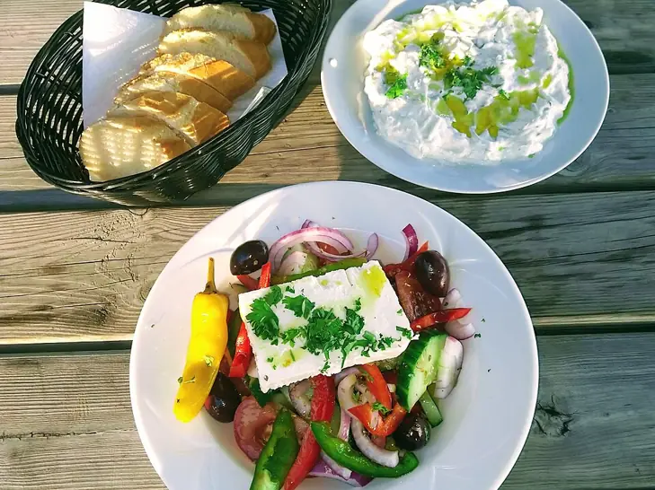

Фото: Paasikivi, CC BY-SA 4.0

Греческий салат
Крупно нарезанные помидоры, огурцы, перец и маслины с брынзой и оливковым маслом
15 мин3 порц.353 ккал на порциюБ 12 · Ж 28 · У 13Средиземноморская кухня
Продукты на 3 порц.
- Помидоры3 шт
- Огурцы2 шт
- Перец болгарский1 шт
- Лук репчатый0,5 шт
- Оливки / маслины80 г
- Брынза / фета150 г
- Оливковое масло3 ст. л.
- Лимон2 ч. л.
- Сушёные травы1 ч. л.
- Соль1 щеп.
- Перец чёрный молотыйпо вкусу
- Салат листовой по желаниюпо вкусу
Как готовить
- Нарежьте помидоры и огурцы крупными кусками около 2 см.
- Перец нарежьте полосками, лук тонкими полукольцами.
- Сложите овощи в миску, добавьте маслины.
- Смешайте оливковое масло, лимонный сок, сушёные травы, соль и перец.
- Полейте салат заправкой и аккуратно перемешайте.
- Сверху выложите брынзу кубиками или одним куском и не перемешивайте, чтобы сыр не раскрошился.
Совет. Брынза солёная, поэтому салат солите совсем чуть-чуть. Заправляйте прямо перед подачей, иначе помидоры пустят сок.